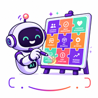
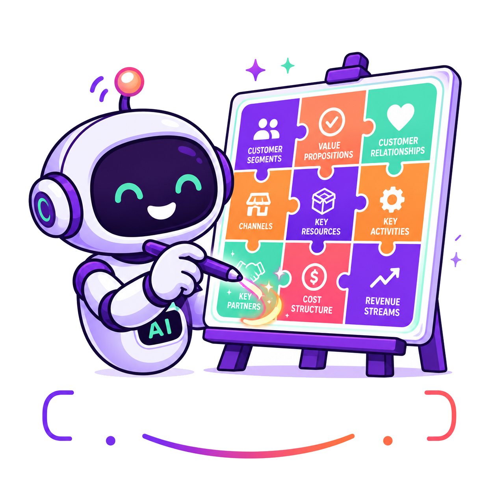

Masukkan konteks
Teks, suara, atau dokumen menjadi bahan awal untuk memahami masalah, pelanggan, dan penawaran.

YourFuture BMC AI Agent
Untuk founder, UMKM, dan ide bisnis tahap awal
Ubah ide bisnis menjadi Business Model Canvas lengkap dalam beberapa menit, lalu refine dengan chatbot dan siapkan konten sosial media untuk menarik calon pelanggan.

Core Feature 1
Masukkan ide, rekam suara, atau unggah dokumen. Aplikasi ini menghasilkan BMC terstruktur, asumsi risiko, dan bahan diskusi lanjutan.
AI menandai bagian yang perlu diuji sebelum Anda menghabiskan terlalu banyak biaya.
Knowledge Base
Workflow
Teks, suara, atau dokumen menjadi bahan awal untuk memahami masalah, pelanggan, dan penawaran.
Agent menyusun customer segments, value proposition, channel, revenue, hingga cost structure.
Risiko paling mahal diprioritaskan, lalu AI menyarankan eksperimen sederhana untuk validasi.
Fitur produk
Gunakan Web Speech API untuk menangkap ide saat pengguna belum siap menulis panjang.
Unggah brief, catatan, atau deck awal sebagai konteks ide bisnis yang ingin diubah menjadi BMC.
Agent membantu memisahkan ide yang menarik dari asumsi yang belum terbukti.
Output BMC bisa diunduh sebagai Markdown, HTML, atau dicetak menjadi PDF dari browser.
Monetisasi
BMC generation, basic AI chat, simpan kanvas, export.
Coba sekarangPembelian satu kali untuk hasil BMC Indonesia atau $5-10 global.
Konsultasi langsung dengan founder untuk validasi dan strategi go-to-market.
Validasi pasar
"Saya bisa melihat pelanggan, channel, dan biaya utama dalam satu layar sebelum mulai produksi."
"Bagian risiko membantu tim kami tahu eksperimen apa yang harus diuji minggu ini."
"Konten sosialnya membuat edukasi BMC jadi konsisten tanpa mulai dari halaman kosong."
FAQ
Frontend tetap punya fallback offline, dan backend Express sudah tersedia untuk memakai OpenAI API jika config.js diarahkan ke domain API Contabo.
Prototype ini membuat draft, jadwal, dan saran visual. Untuk publish otomatis, integrasikan MCP seperti Kadenzo atau Outpost dengan kredensial platform sosial.
Ya. Konten default berbahasa Indonesia dan paket global sudah disiapkan dalam pricing. Copy dan prompt bisa dibuat bilingual pada fase berikutnya.
Uji ide pertama Anda, lihat risiko asumsi, lalu ubah insight menjadi konten akuisisi.
Buat BMC pertama
Core Feature 2
Social Media AI Agent
Buat draft konten BMC dan entrepreneurship untuk Instagram, LinkedIn, X, TikTok, dan Facebook. Cocok sebagai lapisan awal sebelum integrasi MCP publishing.
Draft sosial siap dibuat.